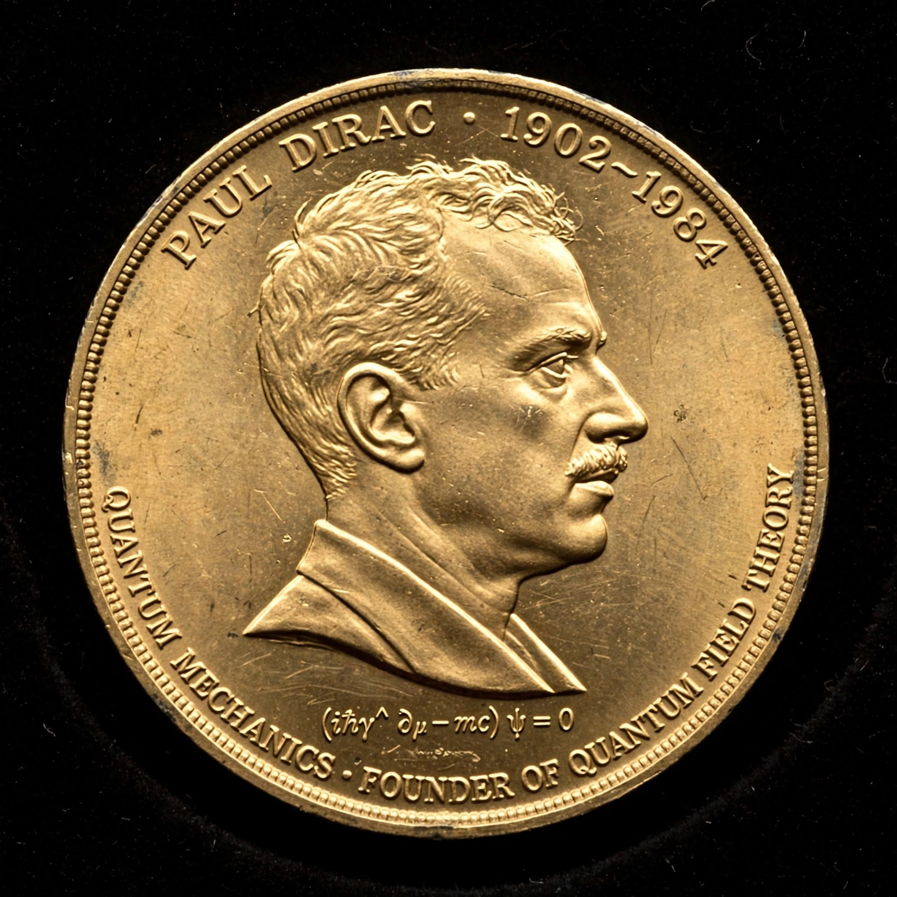

From Wikipedia, the free encyclopedia
| Dirac Medal of the ICTP | |
|---|---|
 | |
| Awarded for | Outstanding contributions to theoretical physics |
| Presented by | Abdus Salam International Centre for Theoretical Physics (ICTP), Trieste |
| First awarded | 1985 |
| Named after | Paul Dirac |
The Dirac Medal of the Abdus Salam International Centre for Theoretical Physics (ICTP) in Trieste, Italy, is awarded each year in honour of the physicist Paul Dirac, who was a close associate of the centre. First given in 1985, it recognises scientists who have made significant contributions to theoretical physics. The medal is traditionally announced on 8 August, Dirac's birthday, and by convention is not awarded to Nobel laureates or Wolf Prize winners, which has made it a famous "predictor" of future Nobel Prizes.
The first medals went to Edward Witten and Yakov Zeldovich in 1985. The list of medallists reads as a roll of modern theoretical physics: Michael Green and John Schwarz for superstring theory, David Gross, and many others whose work was later recognised by the Nobel committee. Because of the exclusion rule, the medal highlights major figures — such as Witten — whose contributions lie outside Nobel categories.
The ICTP medal should not be confused with the Dirac Medal and Prize of the UK Institute of Physics, or the Dirac Medal of the University of New South Wales. The ICTP, founded in 1964 by Abdus Salam, supports scientists from developing countries; its other honours include the Ramanujan Prize for young mathematicians from the developing world.